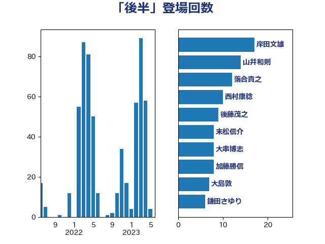

単語「後半」

| 西村康稔 | 自由民主党 | 15 回 |
| 山井和則 | 立憲民主党 | 12 回 |
| 岸田文雄 | 自由民主党 | 9 回 |
| 後藤茂之 | 自由民主党 | 9 回 |
| 大串博志 | 立憲民主党 | 8 回 |
| 宮本徹 | 日本共産党 | 8 回 |
| 末松信介 | 自由民主党 | 8 回 |
| 落合貴之 | 立憲民主党 | 8 回 |
| 中島克仁 | 立憲民主党 | 7 回 |
| 串田誠一 | 日本維新の会 | 6 回 |
| 浅野哲 | 国民民主党 | 6 回 |
| 嘉田由紀子 | 無所属 | 5 回 |
| 斉藤鉄夫 | 公明党 | 5 回 |
| 梶山弘志 | 自由民主党 | 5 回 |
| 片山大介 | 日本維新の会 | 5 回 |
| 穀田恵二 | 日本共産党 | 5 回 |
| 菅義偉 | 自由民主党 | 5 回 |
| 藤田文武 | 日本維新の会 | 5 回 |
| 赤羽一嘉 | 公明党 | 5 回 |
| 吉良州司 | 無所属 | 4 回 |
| 城井崇 | 立憲民主党 | 4 回 |
| 大塚耕平 | 国民民主党 | 4 回 |
| 大島敦 | 立憲民主党 | 4 回 |
| 太栄志 | 立憲民主党 | 4 回 |
| 室井邦彦 | 日本維新の会 | 4 回 |
| 山崎正恭 | 公明党 | 4 回 |
| 岩渕友 | 日本共産党 | 4 回 |
| 川田龍平 | 立憲民主党 | 4 回 |
| 後藤祐一 | 立憲民主党 | 4 回 |
| 柚木道義 | 立憲民主党 | 4 回 |
| 田村憲久 | 自由民主党 | 4 回 |
| 自見はなこ | 自由民主党 | 4 回 |
| 茂木敏充 | 自由民主党 | 4 回 |
| 阿部知子 | 立憲民主党 | 4 回 |
| 麻生太郎 | 自由民主党 | 4 回 |
| 勝部賢志 | 立憲民主党 | 3 回 |
| 古賀之士 | 立憲民主党 | 3 回 |
| 大西健介 | 立憲民主党 | 3 回 |
| 山口壯 | 自由民主党 | 3 回 |
| 岡本あき子 | 立憲民主党 | 3 回 |
| 有村治子 | 自由民主党 | 3 回 |
| 江田憲司 | 立憲民主党 | 3 回 |
| 浜田聡 | NHK党 | 3 回 |
| 田村まみ | 国民民主党 | 3 回 |
| 礒崎哲史 | 国民民主党 | 3 回 |
| 萩生田光一 | 自由民主党 | 3 回 |
| 蓮舫 | 立憲民主党 | 3 回 |
| 足立康史 | 日本維新の会 | 3 回 |
| 道下大樹 | 立憲民主党 | 3 回 |
| 下野六太 | 公明党 | 2 回 |
| 井坂信彦 | 立憲民主党 | 2 回 |
| 倉林明子 | 日本共産党 | 2 回 |
| 加藤勝信 | 自由民主党 | 2 回 |
| 古賀友一郎 | 自由民主党 | 2 回 |
| 吉川元 | 立憲民主党 | 2 回 |
| 吉川赳 | 無所属 | 2 回 |
| 宮本周司 | 自由民主党 | 2 回 |
| 小林鷹之 | 自由民主党 | 2 回 |
| 山崎誠 | 立憲民主党 | 2 回 |
| 山添拓 | 日本共産党 | 2 回 |
| 平井卓也 | 自由民主党 | 2 回 |
| 平木大作 | 公明党 | 2 回 |
| 杉尾秀哉 | 立憲民主党 | 2 回 |
| 梅村聡 | 日本維新の会 | 2 回 |
| 池田佳隆 | 自由民主党 | 2 回 |
| 河野太郎 | 自由民主党 | 2 回 |
| 泉健太 | 立憲民主党 | 2 回 |
| 泉田裕彦 | 自由民主党 | 2 回 |
| 牧原秀樹 | 自由民主党 | 2 回 |
| 田村智子 | 日本共産党 | 2 回 |
| 豊田俊郎 | 自由民主党 | 2 回 |
| 赤木正幸 | 日本維新の会 | 2 回 |
| 足立敏之 | 自由民主党 | 2 回 |
| 逢坂誠二 | 立憲民主党 | 2 回 |
| 金子恵美 | 立憲民主党 | 2 回 |
| 鎌田さゆり | 立憲民主党 | 2 回 |
| ながえ孝子 | 無所属 | 1 回 |
| 上川陽子 | 自由民主党 | 1 回 |
| 上田清司 | 国民民主党 | 1 回 |
| 上田英俊 | 自由民主党 | 1 回 |
| 中川宏昌 | 公明党 | 1 回 |
| 中川正春 | 立憲民主党 | 1 回 |
| 中村裕之 | 自由民主党 | 1 回 |
| 中谷真一 | 自由民主党 | 1 回 |
| 中野英幸 | 自由民主党 | 1 回 |
| 井出庸生 | 自由民主党 | 1 回 |
| 仁木博文 | 無所属 | 1 回 |
| 今枝宗一郎 | 自由民主党 | 1 回 |
| 伊佐進一 | 公明党 | 1 回 |
| 伊東信久 | 日本維新の会 | 1 回 |
| 伊波洋一 | 無所属 | 1 回 |
| 伊藤岳 | 日本共産党 | 1 回 |
| 住吉寛紀 | 日本維新の会 | 1 回 |
| 佐々木さやか | 公明党 | 1 回 |
| 佐藤正久 | 自由民主党 | 1 回 |
| 佐藤茂樹 | 公明党 | 1 回 |
| 前川清成 | 日本維新の会 | 1 回 |
| 務台俊介 | 自由民主党 | 1 回 |
| 北村経夫 | 自由民主党 | 1 回 |
| 古川禎久 | 自由民主党 | 1 回 |
| 古賀篤 | 自由民主党 | 1 回 |
| 吉田久美子 | 公明党 | 1 回 |
| 吉良よし子 | 日本共産党 | 1 回 |
| 和田政宗 | 自由民主党 | 1 回 |
| 堀場幸子 | 日本維新の会 | 1 回 |
| 大岡敏孝 | 自由民主党 | 1 回 |
| 宗清皇一 | 自由民主党 | 1 回 |
| 宮沢洋一 | 自由民主党 | 1 回 |
| 宮路拓馬 | 自由民主党 | 1 回 |
| 小倉將信 | 自由民主党 | 1 回 |
| 小沼巧 | 立憲民主党 | 1 回 |
| 尾崎正直 | 自由民主党 | 1 回 |
| 尾身朝子 | 自由民主党 | 1 回 |
| 山下芳生 | 日本共産党 | 1 回 |
| 山下雄平 | 自由民主党 | 1 回 |
| 山本博司 | 公明党 | 1 回 |
| 山田美樹 | 自由民主党 | 1 回 |
| 岬麻紀 | 日本維新の会 | 1 回 |
| 岸真紀子 | 立憲民主党 | 1 回 |
| 川合孝典 | 国民民主党 | 1 回 |
| 市村浩一郎 | 日本維新の会 | 1 回 |
| 平山佐知子 | 無所属 | 1 回 |
| 斎藤嘉隆 | 立憲民主党 | 1 回 |
| 東徹 | 日本維新の会 | 1 回 |
| 枝野幸男 | 立憲民主党 | 1 回 |
| 柳本顕 | 自由民主党 | 1 回 |
| 柴田巧 | 日本維新の会 | 1 回 |
| 梅村みずほ | 日本維新の会 | 1 回 |
| 梅谷守 | 立憲民主党 | 1 回 |
| 森山浩行 | 立憲民主党 | 1 回 |
| 森英介 | 自由民主党 | 1 回 |
| 櫻井充 | 自由民主党 | 1 回 |
| 武見敬三 | 自由民主党 | 1 回 |
| 沢田良 | 日本維新の会 | 1 回 |
| 河野義博 | 公明党 | 1 回 |
| 津島淳 | 自由民主党 | 1 回 |
| 浜口誠 | 国民民主党 | 1 回 |
| 漆間譲司 | 日本維新の会 | 1 回 |
| 片山さつき | 自由民主党 | 1 回 |
| 牧山ひろえ | 立憲民主党 | 1 回 |
| 田島麻衣子 | 立憲民主党 | 1 回 |
| 田嶋要 | 立憲民主党 | 1 回 |
| 田村貴昭 | 日本共産党 | 1 回 |
| 矢倉克夫 | 公明党 | 1 回 |
| 石井啓一 | 公明党 | 1 回 |
| 石井章 | 日本維新の会 | 1 回 |
| 石井苗子 | 日本維新の会 | 1 回 |
| 石垣のりこ | 立憲民主党 | 1 回 |
| 石川昭政 | 自由民主党 | 1 回 |
| 石田昌宏 | 自由民主党 | 1 回 |
| 神谷裕 | 立憲民主党 | 1 回 |
| 福重隆浩 | 公明党 | 1 回 |
| 秋本真利 | 自由民主党 | 1 回 |
| 笠井亮 | 日本共産党 | 1 回 |
| 笹川博義 | 自由民主党 | 1 回 |
| 篠原孝 | 立憲民主党 | 1 回 |
| 篠原豪 | 立憲民主党 | 1 回 |
| 細田健一 | 自由民主党 | 1 回 |
| 緑川貴士 | 立憲民主党 | 1 回 |
| 羽田次郎 | 立憲民主党 | 1 回 |
| 若宮健嗣 | 自由民主党 | 1 回 |
| 菊田真紀子 | 立憲民主党 | 1 回 |
| 藤井比早之 | 自由民主党 | 1 回 |
| 西田昌司 | 自由民主党 | 1 回 |
| 西銘恒三郎 | 自由民主党 | 1 回 |
| 赤澤亮正 | 自由民主党 | 1 回 |
| 近藤和也 | 立憲民主党 | 1 回 |
| 野上浩太郎 | 自由民主党 | 1 回 |
| 野田聖子 | 自由民主党 | 1 回 |
| 野間健 | 立憲民主党 | 1 回 |
| 金子恭之 | 自由民主党 | 1 回 |
| 長坂康正 | 自由民主党 | 1 回 |
| 阿達雅志 | 自由民主党 | 1 回 |
| 阿部司 | 日本維新の会 | 1 回 |
| 階猛 | 立憲民主党 | 1 回 |
| 青山繁晴 | 自由民主党 | 1 回 |
| 音喜多駿 | 日本維新の会 | 1 回 |
| 高木かおり | 日本維新の会 | 1 回 |
| 高橋光男 | 公明党 | 1 回 |
| 高橋千鶴子 | 日本共産党 | 1 回 |
| 高良鉄美 | 無所属 | 1 回 |